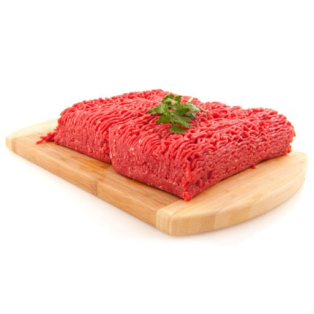
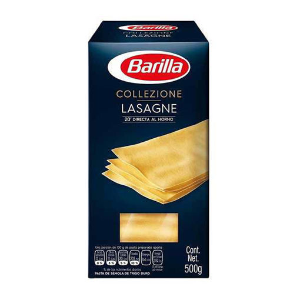
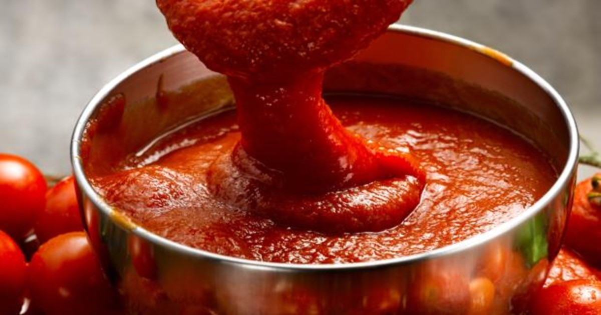
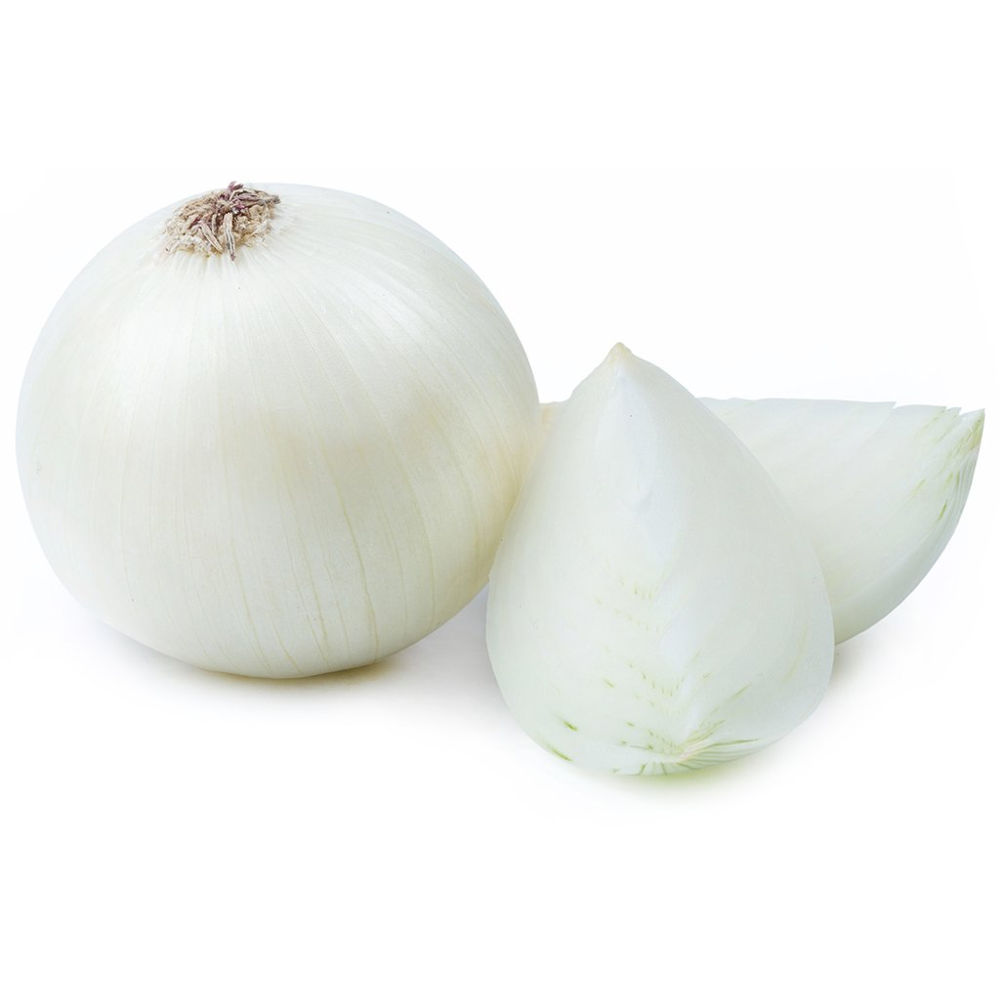
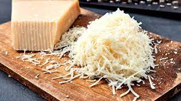
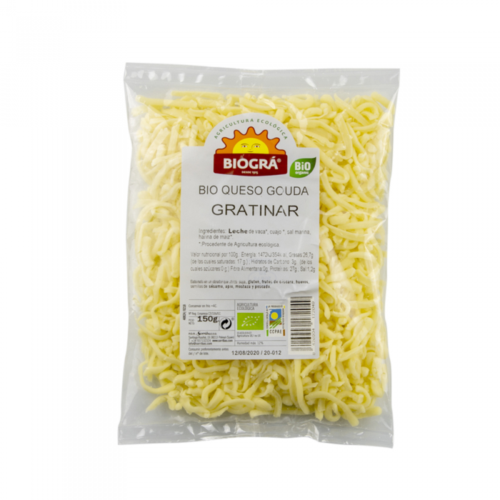
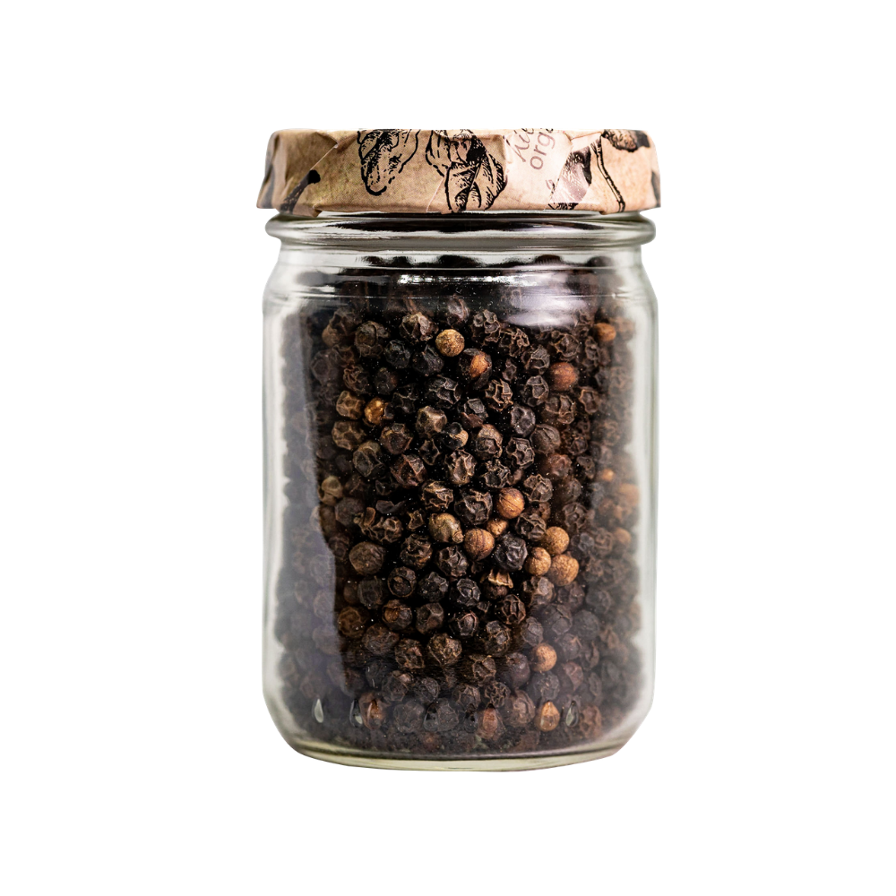
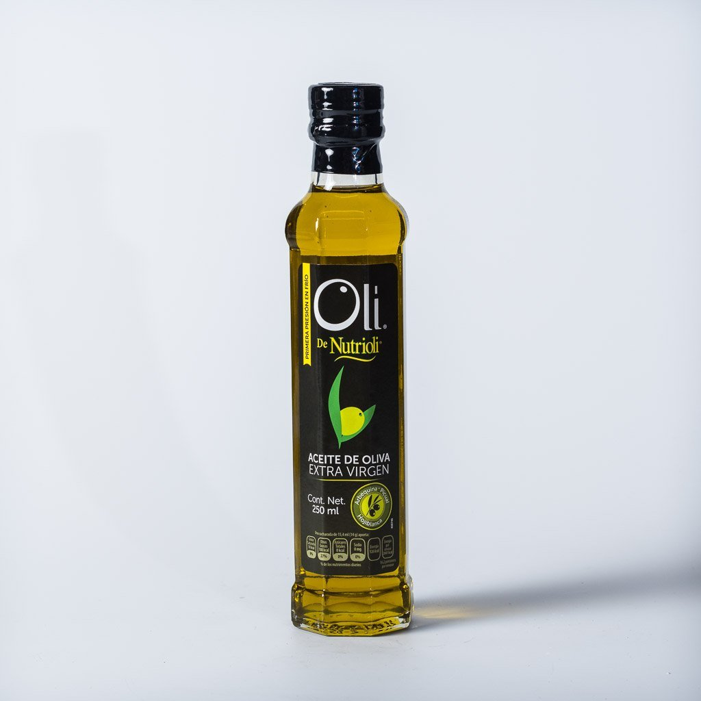
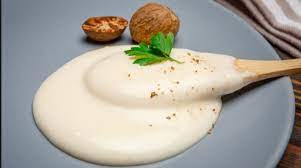

Recetas de cocina
Lasagna para 6 personas
Ingredientes
| INGREDIENTE |
FOTOGRAFIA |
CANTIDAD |
| Carne picada (cerdo o ternera) |

|
750g |
| Laminas de lasagna |

|
12 Laminas |
| Salsa de tomate |

|
350g |
| Vino blanco |
|
200 ml (1 vaso) |
| Cebolla |

|
1 pza |
| Queso |

|
200 g |
| Queso rayado para gratinar |

|
100 g |
| Sal |
|
Al gusto |
| Pimienta |

|
Al gusto |
| Aceite de Oliva |

|
Al gusto |
| Salsa Bechamel |

|
Preparar bastante |
NOTA: Si no sabes preparar una salsa bechamel, aqui tienes los ingredientes y modo de preparacion
para hacer una.
Preparaciones
Relleno
- Colocar aceite de oliva en una sarten y luego la carne, añadir sal y un poco de pimienta.
- Cocinar muy bien la carne y añadir la cebolla picada (cocinar aprox 5 mmin.)
-
Una vez pasado los 5 minutos, añadir el vino blanco y cocinar a fuego medio
(Mover la carne de vez en cuando).
- Una vez que el vino se ha secado completamente, añadir la salsa de tomate y cocinar hasta que
se reduzca un poco el tomate o que se forme la consistencia deseada para retirar del fuego.
Pasta
- Colocar en una olla agua, agregar sal y poner al fuego.
- Cuando el agua comience a hervir se le añaden las placas de lasagna una a una.
- Hervir aprox 12 min (Segun el tipo de lasagna).
- Mientras se hierve la pasta, preparar el bechamel.
- Una vez pasados los 12 minutos, quitar el agua caliente mientes se le agrega agua fria
para asi parar la coccion de la pasta.
- Retirar las placas de lasagna y dejar en una toallita limpia.(Retirar cuidadosamente ya
que se pueden romper las laminas, si se rompen levemente, no importa)
Salsa Bechamel
Ingredientes
- 400 ml de leche
- 25 g de mantequilla
- 25 g de harina de trigo
- sal
- pimienta
- nuez moscada
Preparacion
- En una sarten, agregar la mantequilla hasta que se derrita.
- Añadir una cucharada de harina (De preferencia que sea abundante la cucharada)
- Tostar la harina con un globo de cocina y una vez que este bien tostada, se añade la leche caliente poco a
poco (Continuar batiendo con el globo mientras se añade la leche para no generar grumos).
- Añadir una punta de cucharada de pimienta, una de nuez moscada y una de sal.
- Continuar batiendo hasta que comience a hervir.
Una vez que se tienen listas las preparaciones, ha llegado el momento de montar en un recipiente
y meter al horno.
Si ya tienes una idea de como montar los ingredientes, puedes comenzar y meter al horno, pero, si
no tienes una idea de como comenzar a montar, aqui te damos el procedimiento que tienes que seguir
para que te quede un platillo Delicioso!!
Montar las preparaciones
- Antes de comenzar a armar las capas de la lasagna, cortar el queso en laminas segun el tipo de recipiente en
el que se va a colocar. Puede ser queso parmesano y manchego segun el gusto.
- Colocar en el recipiente salsa bechamel y barnizarlo para que no se pegue la lasagna.
- Añadir la primera capa con las laminas una sobre otra de forma que quede el recipiente cubierto.
- Añadir una capa de queso de la misma forma.
- Añadir la carne y extenderla a lo largo del recipiente.
- Añadir encima de la carne otra capa de laminas de lasagna.
- Añadir otra capa de queso.
- Añadir otra capa de carne.
AÑADIR LA CANTIDAD DE CAPAS SEGUN EL GUSTO, PUEDNE SER MAS O PUEDEN SER MENOS.
- Cubrir la ultima capa con laminas de lasagna.
- Añadir bechamel a la ultima capa.
- Encima de la bechamel se coloca el queso rallado.
- Cubrir el recipiente con papel aluminio y meter al horno a 220° por 20-30 min.
- Retirar el papel aluminio y volver a meter al horno aprox 10 min para gratinar y dorar el queso de la ultima
capa.